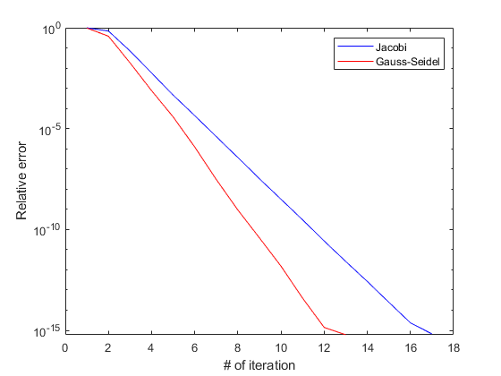

Solution of x in Ax=b using Jacobi Method and Gauss -Seidel Method
clear all; clc;
tol=1e-15;
format long;
r = 100;
randn('seed',20190227);
A = randn(r);
b = randn(r,1);
x = randn(r,1);
for i =1:r
for j = 1:r
q = randn();
if q >=0
q = 1;
else
q=-1;
end
A(i,i) = q *(abs(A(i,i))+abs(A(i,j)));
end
end
[itr_vec, error1] = Jacobi(A,b,x,tol,100);
[itr_vec1, error2] = GaussSeidel(A,b,x,tol,100);
semilogy(itr_vec, error1,'b-');
hold on
semilogy(itr_vec1, error2,'r-');
xlabel("# of iteration");
ylabel("Relative error");
legend("Jacobi", "Gauss-Seidel");
Run Jacobi Method:
iter = 1 x=0.14204281758909 -0.29654334310740 0.05422420250948 -0.11215703415384 0.18083712968998 0.04025758100339 -0.04936844998806 -0.04338606824391 -0.08515344196799 0.21054345863308 0.02734732991653 0.06442700393408 0.03524727613636 0.05722666656624 0.08762387261467 0.10288518275191 -0.03285760324606 0.27996363808392 -0.03483528827389 0.06419704806357 -0.16114457201760 0.07156625532983 -0.00096090347314 -0.10798865306749 -0.04198510841176 0.06614624859154 -0.14179668442613 -0.09320576652526 -0.13604287979903 -0.11503659405084 -0.01647280557324 0.09514454112874 0.05480071792690 0.06136151555741 -0.03195129431145 0.06173436051590 0.27444304318024 0.03215944721900 -0.09584558340959 -0.10099819897352 0.13987885761652 -0.05939510162217 0.01867736878996 -0.01699649598770 0.06906447026493 -0.14140900742871 0.14008455389289 0.01647627731110 -0.12328920970120 0.01059531732741 0.03690166475817 0.06697902650278 -0.13265281815981 -0.01385352110950 -0.02479892796287 -0.06937876349099 -0.07630849628876 -0.06456160327807 -0.15638431004773 0.01213816867215 -0.09590266130324 -0.03278301960057 0.02692265579052 -0.02614712980571 -0.03309140893850 -0.01698819491853 0.05485584869532 0.18618034140831 0.00946096625763 -0.07521469910515 -0.00177104496128 -0.04506556799392 0.02000938173389 0.13243159923773 -0.08360539457603 -0.05809061517689 -0.13367523202084 0.03901532380670 0.07826344134878 -0.05904460413393 -0.05353079309731 -0.06384086913558 0.07406940784511 0.00521938786491 0.04062088832909 -0.07678954893336 -0.05161869363755 -0.03677158760331 -0.00663830982464 0.00353788255224 -0.13430052545388 -0.25743664423031 -0.08988102476223 0.07470097722863 0.08199720212476 0.09328618887524 -0.08350898803840 0.13543930084087 0.13575100167629 0.01473622902734 error = 0.98930980490184
iter = 2 x=-0.00676045940899 -0.03028834278191 -0.03615162714679 -0.03604970003870 -0.00034057521412 -0.02846948909412 -0.00532065661963 -0.00429058763460 -0.00917553141982 -0.01220577298852 -0.01963772313378 0.00614595644253 -0.01905701185096 -0.01312504021951 -0.00306242980830 -0.00328217969316 -0.00980478057079 -0.00655836435650 0.02550608596315 -0.01300177692701 -0.02210979231852 0.01194118352430 -0.00163350831170 0.01072694362413 0.02876255725817 -0.00783447546384 0.00974740806631 -0.00238462552951 0.00858230137983 0.00120621704311 -0.00499995073761 0.02372380517648 0.02223399743291 0.01831144758892 0.01298830726854 -0.00685937908814 -0.00976056062258 -0.00702706761758 -0.00580326037224 -0.00407722850013 -0.01410720118147 -0.01365424699574 0.02690362841660 -0.00927241348887 0.00427130687772 0.00571683193431 0.00573881602662 0.01243981047344 0.00959404996249 -0.00659521035793 0.00591492930079 0.00969669546863 -0.00168732654239 -0.00349387620115 0.00546714467206 -0.00089715407739 0.00278032457944 0.02028578716239 0.00658230075019 0.01197469733777 -0.00576667356873 0.01159204395813 -0.00854485908090 -0.00239908875728 0.01045930277539 -0.01834693717816 0.01512301778978 0.01054542809376 -0.00435855505429 0.01678950899770 -0.00284922056366 -0.01246139717562 0.00658902790402 -0.00569273977805 0.00433573283615 -0.01496498880166 0.00274710021629 -0.02063920656774 -0.00162213860001 0.01100214704821 0.00465311722054 0.00224316150636 0.00148304472357 0.00279992427884 0.01945067875015 -0.00034152588512 0.00834919596348 0.01265413869976 0.00642227457633 -0.01647330856013 0.00124138600599 -0.01016233549605 -0.01036577428909 0.00194890516623 0.00136971218071 -0.02442136561103 0.00254215110781 -0.02486711493274 0.00695708309683 -0.00009306526276 error = 0.68657897043320
iter = 3 x=-0.00754441769758 -0.02922397402520 -0.02792497804613 -0.01274818638265 0.00981518164672 -0.02197157143393 -0.01379273651657 -0.00767670339312 -0.01467130080195 0.00691740224240 -0.01985669432321 0.01025263308505 -0.00256081430337 -0.01449479835509 0.00430711504097 0.00437003171998 -0.00007846808020 -0.00769210166238 0.01634588034105 -0.01675422475526 -0.00702260499408 0.00723891520367 -0.00738443337215 0.01400925579839 0.01767606527067 0.00892469239473 0.01838232466533 -0.00249370007331 -0.00591447040223 0.00007522470544 0.00255302394137 0.00746867965269 0.00320767935797 0.02125026609070 0.00334136555923 -0.00507048642660 -0.00086924761637 0.00777002525448 0.00173248096546 -0.01044780817341 0.00154012349914 -0.01064709734727 0.00434415779369 -0.00761680596022 0.00983126536982 0.00600909924168 -0.01254486125290 0.00566821351751 -0.00568409923283 -0.00143815884982 -0.00025910506395 0.00330074001555 -0.00959765313505 0.00421196605293 0.00386891791283 -0.00326902972745 -0.00347897486215 0.01336179359119 0.00299356345412 0.00546106098649 0.00153006078255 0.00803522119527 -0.00764339850450 0.00999191294851 -0.00679525990473 -0.01510824602543 0.00707892108626 0.00915079517577 0.00788648837278 0.00497506150990 -0.00564661765307 -0.00994516888252 0.00628568783694 -0.00239631727561 0.00679420121409 -0.01831141650783 -0.01184923022471 -0.00577323391295 0.00678744546525 -0.00283072459103 -0.00060877736009 0.00254800772398 0.00755319518036 -0.00262644633161 0.00940471151297 -0.00122090895673 -0.00659818662697 -0.00124624056610 0.01155732294591 -0.01099105209379 0.00623677282529 -0.00797597557675 -0.00752114812977 0.00235075507311 -0.00001448426487 -0.01714758774568 -0.00081183225461 -0.01033187109390 0.01149732254310 -0.00021602306341 error = 0.07043594984029
iter = 4 x=-0.00825394685516 -0.03029177098321 -0.02766347618040 -0.01311066633129 0.00957936570401 -0.02353275346736 -0.01335441154792 -0.00576954029896 -0.01495377725414 0.00651836926989 -0.02022139427103 0.01077188703409 -0.00293604236760 -0.01410147769874 0.00519902526322 0.00414251614408 0.00004363702857 -0.00801848703585 0.01713359875512 -0.01640254624393 -0.00768628410442 0.00583489472544 -0.00647730297490 0.01439409781161 0.01631073294916 0.00886776924958 0.01847008971215 -0.00197408455606 -0.00599444188365 -0.00050947249958 0.00405883125823 0.00735836498886 0.00289585526026 0.02084602920104 0.00291095892925 -0.00465928854084 -0.00064097597944 0.00741717905129 0.00035730296208 -0.00983346703505 0.00148898572571 -0.01205865973341 0.00512316837388 -0.00645408150864 0.01015020792167 0.00613008908629 -0.01281802455130 0.00637800764585 -0.00560667617490 -0.00089547487474 -0.00025949693590 0.00343873198723 -0.00735599971944 0.00344117153821 0.00353486162510 -0.00329560468581 -0.00415550476603 0.01336280828716 0.00288563667687 0.00438860907620 0.00119950175961 0.00849538246855 -0.00706974839487 0.01005511937913 -0.00656602750816 -0.01530505607180 0.00729756810655 0.00828440377105 0.00726597274661 0.00571004961304 -0.00594792928003 -0.01066904476716 0.00650568517051 -0.00218391769351 0.00687945083145 -0.01719009448299 -0.01099703384414 -0.00663026392437 0.00636838259728 -0.00204623079336 0.00039862494547 0.00285998153023 0.00742868750771 -0.00211893527435 0.00959545163097 -0.00163140155683 -0.00622348685247 -0.00056259620063 0.01160484820014 -0.00952099507460 0.00589945438302 -0.00760860326118 -0.00870407249636 0.00215422942088 0.00014396790664 -0.01660898200313 -0.00039253874234 -0.00997250632878 0.01186887059951 -0.00148367778992 error = 0.00572804081169
iter = 5 x=-0.00836090334313 -0.03019593818124 -0.02775247585912 -0.01307234424238 0.00965962071118 -0.02347635213390 -0.01332686531950 -0.00576188087463 -0.01503241495205 0.00651287108070 -0.02023298134858 0.01066083558166 -0.00294927079744 -0.01419964861714 0.00527819914784 0.00423816289053 -0.00001070241882 -0.00804255422125 0.01705270981315 -0.01632575652171 -0.00760823894111 0.00586692927260 -0.00642581656539 0.01439085031013 0.01638272620588 0.00887892548363 0.01852353279759 -0.00191473644461 -0.00599496395097 -0.00056356140152 0.00406699513513 0.00742660899961 0.00287888568882 0.02079017702443 0.00292799645365 -0.00476753285582 -0.00067183131439 0.00746155094926 0.00046053665558 -0.00996712937803 0.00149135193094 -0.01214352951865 0.00515062743664 -0.00641533352794 0.01014897916310 0.00616439412311 -0.01282815368761 0.00633882860171 -0.00557083923811 -0.00089632510874 -0.00027337820716 0.00328514677306 -0.00735598436069 0.00338982149329 0.00350944154479 -0.00324623399651 -0.00416003235256 0.01341517688581 0.00285394386565 0.00441976738945 0.00123432570298 0.00846445774624 -0.00716216112517 0.01014676444614 -0.00662300361063 -0.01537936914833 0.00734074594705 0.00832374171331 0.00725803903115 0.00572018211150 -0.00596977956365 -0.01067260714382 0.00654505709233 -0.00218521161294 0.00685379333075 -0.01721584691932 -0.01100781279381 -0.00659891002628 0.00637083980030 -0.00211972883564 0.00035086521489 0.00284375166314 0.00745236389482 -0.00216361564519 0.00951648110104 -0.00162753993836 -0.00620387505475 -0.00048951367789 0.01148968198206 -0.00950763843087 0.00584250638927 -0.00760321976478 -0.00866168693573 0.00216613454033 0.00008689514882 -0.01666468373612 -0.00045302758346 -0.00994041245802 0.01188351260355 -0.00140916432501 error = 0.00046069403025
iter = 6 x=-0.00836903638381 -0.03020307985777 -0.02776068731586 -0.01307179369587 0.00964920590225 -0.02347792467880 -0.01332560696694 -0.00575652814961 -0.01503626752494 0.00651344856595 -0.02023208353465 0.01066139343449 -0.00294657699617 -0.01419950138241 0.00529268677279 0.00423785307307 -0.00001684889817 -0.00805299744068 0.01705731167536 -0.01632553705107 -0.00761152537435 0.00586634609362 -0.00642719261678 0.01439148054037 0.01637767345150 0.00887886218185 0.01852622604415 -0.00191601447728 -0.00599511784721 -0.00055862836885 0.00406697947984 0.00742482047408 0.00287964817303 0.02079414880689 0.00293106948844 -0.00476478898669 -0.00067843686623 0.00745806960535 0.00045576307636 -0.00996747031732 0.00148929080902 -0.01213429442282 0.00514568197278 -0.00641248091366 0.01015142985678 0.00617114500996 -0.01284256176132 0.00634882489177 -0.00557156196296 -0.00089852536564 -0.00027012370655 0.00328107582601 -0.00735387212987 0.00339264127382 0.00350711285605 -0.00324905658722 -0.00416155861295 0.01341007476436 0.00285013272547 0.00442110131989 0.00123549365041 0.00846818424586 -0.00716426873397 0.01014652595686 -0.00662618987591 -0.01537013158162 0.00733433642533 0.00831780746053 0.00726431831255 0.00572525622959 -0.00597058002068 -0.01067339543810 0.00654239333817 -0.00218183104105 0.00685014897326 -0.01721702719597 -0.01100080428515 -0.00659876047773 0.00636990363787 -0.00212226590347 0.00035022437318 0.00284510286758 0.00745146439401 -0.00216329217364 0.00951308221032 -0.00162255472417 -0.00620248289069 -0.00048935993009 0.01148918357907 -0.00950406292160 0.00584645500459 -0.00760061545134 -0.00866174580668 0.00216378854007 0.00008307157155 -0.01666833641807 -0.00045560446636 -0.00994117740671 0.01188392017391 -0.00141391974187 error = 0.00004415365030
iter = 7 x=-0.00837076057510 -0.03020339321738 -0.02776072744089 -0.01307155934870 0.00964954734373 -0.02347770775652 -0.01332637324298 -0.00575654567944 -0.01503591209192 0.00651360931553 -0.02023177077257 0.01066200751750 -0.00294613156699 -0.01419929935200 0.00529253726326 0.00423797018204 -0.00001616228251 -0.00805418401103 0.01705704105835 -0.01632509240205 -0.00761046701581 0.00586604543328 -0.00642686276167 0.01439106581210 0.01637774082058 0.00887987450034 0.01852706432478 -0.00191526181816 -0.00599576049479 -0.00055890001975 0.00406695523226 0.00742456437317 0.00287963836021 0.02079467097249 0.00293108821173 -0.00476494281978 -0.00067884433295 0.00745856378644 0.00045625283811 -0.00996745530767 0.00148916540548 -0.01213494518322 0.00514497906485 -0.00641234149061 0.01015142480615 0.00617118529462 -0.01284287455135 0.00634899204467 -0.00557167964029 -0.00089830129611 -0.00027021282677 0.00328075401090 -0.00735360488967 0.00339212825153 0.00350701696459 -0.00324834136381 -0.00416122262550 0.01340963315060 0.00285020526036 0.00442075221650 0.00123526376396 0.00846860679040 -0.00716454768104 0.01014688249769 -0.00662641838372 -0.01537030242308 0.00733452507207 0.00831701858612 0.00726407225948 0.00572515651501 -0.00597092199888 -0.01067311525519 0.00654220457057 -0.00218174835896 0.00685004819683 -0.01721710284007 -0.01100093311440 -0.00659843089871 0.00636956425872 -0.00212179216115 0.00034966020283 0.00284548782350 0.00745169963754 -0.00216307751259 0.00951333322018 -0.00162220103887 -0.00620239819648 -0.00048926254556 0.01148936345396 -0.00950380219215 0.00584686040319 -0.00760045072946 -0.00866196502763 0.00216347051436 0.00008296781863 -0.01666850140141 -0.00045591563712 -0.00994101299730 0.01188394666778 -0.00141385132092 error = 0.00000400458771
iter = 8 x=-0.00837078871287 -0.03020332270352 -0.02776071157980 -0.01307154693946 0.00964963439961 -0.02347775646361 -0.01332641101842 -0.00575645398046 -0.01503600053849 0.00651365321467 -0.02023183189881 0.01066207900279 -0.00294608044394 -0.01419929472965 0.00529260412503 0.00423795108618 -0.00001622299194 -0.00805422527124 0.01705706200926 -0.01632509768914 -0.00761039935300 0.00586599899895 -0.00642684263612 0.01439114018841 0.01637770376506 0.00887982478829 0.01852711380531 -0.00191523088206 -0.00599577944225 -0.00055887515465 0.00406704193800 0.00742455421759 0.00287956733683 0.02079469790993 0.00293104762332 -0.00476495646689 -0.00067886229097 0.00745860910478 0.00045631325485 -0.00996747230719 0.00148918950822 -0.01213496857736 0.00514491816954 -0.00641233149807 0.01015144899948 0.00617116092738 -0.01284287697590 0.00634901218609 -0.00557168336951 -0.00089825981308 -0.00027026352033 0.00328074174282 -0.00735362024548 0.00339212590510 0.00350702804248 -0.00324834007539 -0.00416123843256 0.01340965586855 0.00285020518394 0.00442077032842 0.00123524600071 0.00846863871210 -0.00716456996402 0.01014688954576 -0.00662644721028 -0.01537030916508 0.00733455881904 0.00831697689563 0.00726412265528 0.00572515686851 -0.00597095310814 -0.01067315060502 0.00654218600142 -0.00218175077389 0.00685000380797 -0.01721707312167 -0.01100096235989 -0.00659842177469 0.00636958346979 -0.00212180685749 0.00034968260367 0.00284547941809 0.00745166227414 -0.00216310237814 0.00951332863156 -0.00162219548697 -0.00620247280757 -0.00048924765947 0.01148931463088 -0.00950375466377 0.00584687613811 -0.00760043242903 -0.00866197799946 0.00216351044396 0.00008298601344 -0.01666845723817 -0.00045592084353 -0.00994098881206 0.01188394710231 -0.00141390619051 error = 0.00000036938971
iter = 9 x=-0.00837079814099 -0.03020332113805 -0.02776071711205 -0.01307154699159 0.00964963637699 -0.02347775964462 -0.01332640832954 -0.00575644639618 -0.01503599608803 0.00651365307541 -0.02023183090148 0.01066207964221 -0.00294608862191 -0.01419929726298 0.00529260579130 0.00423795322448 -0.00001623004711 -0.00805422860815 0.01705706257248 -0.01632509804036 -0.00761039344073 0.00586599817430 -0.00642683358477 0.01439114160782 0.01637769957128 0.00887982010746 0.01852711275837 -0.00191522903102 -0.00599577673259 -0.00055888149061 0.00406704595401 0.00742454748259 0.00287956170310 0.02079469200584 0.00293104866869 -0.00476496260681 -0.00067886660473 0.00745860394651 0.00045631173714 -0.00996747624763 0.00148919138220 -0.01213497042382 0.00514492123595 -0.00641232330290 0.01015145100861 0.00617116219184 -0.01284287895224 0.00634901272415 -0.00557168508128 -0.00089825572489 -0.00027026409424 0.00328074244716 -0.00735361288463 0.00339212417607 0.00350703088803 -0.00324833655508 -0.00416123925501 0.01340965487803 0.00285020808071 0.00442076937195 0.00123524723683 0.00846863872290 -0.00716456569456 0.01014688899743 -0.00662644660999 -0.01537030446793 0.00733455734775 0.00831697419466 0.00726412068268 0.00572515872967 -0.00597094828458 -0.01067315190552 0.00654218423599 -0.00218174897434 0.00685000504664 -0.01721707145602 -0.01100096006563 -0.00659842299141 0.00636958749728 -0.00212180622029 0.00034968253206 0.00284548103280 0.00745166210074 -0.00216309667816 0.00951332652215 -0.00162219893675 -0.00620247270127 -0.00048924951872 0.01148931592193 -0.00950374877127 0.00584687433345 -0.00760042920902 -0.00866197661064 0.00216351003560 0.00008298378911 -0.01666845759250 -0.00045592155589 -0.00994099039418 0.01188394931827 -0.00141391062694 error = 0.00000003287385
iter = 10 x=-0.00837079886784 -0.03020332135452 -0.02776071774451 -0.01307154612972 0.00964963614680 -0.02347775969515 -0.01332640862146 -0.00575644648641 -0.01503599644742 0.00651365317438 -0.02023183073497 0.01066207961094 -0.00294608833823 -0.01419929762959 0.00529260608962 0.00423795358163 -0.00001623036574 -0.00805422879784 0.01705706206020 -0.01632509833526 -0.00761039275374 0.00586599824521 -0.00642683334915 0.01439114102102 0.01637769942947 0.00887982002056 0.01852711319477 -0.00191522838619 -0.00599577740896 -0.00055888157095 0.00406704610772 0.00742454703674 0.00287956162339 0.02079469172577 0.00293104874538 -0.00476496264432 -0.00067886680817 0.00745860404779 0.00045631193273 -0.00996747663809 0.00148919099840 -0.01213497050624 0.00514492135664 -0.00641232331347 0.01015145066421 0.00617116255812 -0.01284287913094 0.00634901308307 -0.00557168501569 -0.00089825583247 -0.00027026416623 0.00328074177322 -0.00735361254596 0.00339212397702 0.00350703077777 -0.00324833671735 -0.00416123900699 0.01340965495009 0.00285020818678 0.00442076884396 0.00123524728489 0.00846863905051 -0.00716456607174 0.01014688901965 -0.00662644680009 -0.01537030441529 0.00733455711596 0.00831697418907 0.00726412101023 0.00572515886427 -0.00597094857140 -0.01067315213969 0.00654218421432 -0.00218174888756 0.00685000494692 -0.01721707112369 -0.01100095989044 -0.00659842312139 0.00636958773099 -0.00212180642108 0.00034968220698 0.00284548107950 0.00745166252305 -0.00216309698814 0.00951332619431 -0.00162219858568 -0.00620247261387 -0.00048924942455 0.01148931560556 -0.00950374833886 0.00584687438099 -0.00760042923917 -0.00866197651116 0.00216350986117 0.00008298330038 -0.01666845774702 -0.00045592194487 -0.00994099007881 0.01188394982532 -0.00141391049112 error = 0.00000000315732
iter = 11 x=-0.00837079895323 -0.03020332136580 -0.02776071777415 -0.01307154608962 0.00964963609893 -0.02347775975022 -0.01332640864187 -0.00575644646274 -0.01503599649506 0.00651365322878 -0.02023183074457 0.01066207963849 -0.00294608828761 -0.01419929757659 0.00529260613962 0.00423795355613 -0.00001623036482 -0.00805422886818 0.01705706206274 -0.01632509831743 -0.00761039272346 0.00586599825883 -0.00642683336715 0.01439114105451 0.01637769938657 0.00887982006020 0.01852711322238 -0.00191522835093 -0.00599577739312 -0.00055888151747 0.00406704612358 0.00742454703520 0.00287956163700 0.02079469176407 0.00293104878914 -0.00476496262365 -0.00067886682684 0.00745860409274 0.00045631196537 -0.00996747663340 0.00148919100324 -0.01213497048455 0.00514492135469 -0.00641232330067 0.01015145064756 0.00617116258834 -0.01284287917596 0.00634901310883 -0.00557168503755 -0.00089825585000 -0.00027026415450 0.00328074174878 -0.00735361251676 0.00339212400666 0.00350703076312 -0.00324833671843 -0.00416123904039 0.01340965493141 0.00285020816512 0.00442076883110 0.00123524729276 0.00846863909114 -0.00716456611016 0.01014688903975 -0.00662644683941 -0.01537030443891 0.00733455712386 0.00831697412754 0.00726412106149 0.00572515885758 -0.00597094859223 -0.01067315212397 0.00654218420046 -0.00218174890664 0.00685000495025 -0.01721707115366 -0.01100095987223 -0.00659842314386 0.00636958771750 -0.00212180640524 0.00034968218671 0.00284548109158 0.00745166253275 -0.00216309699444 0.00951332620652 -0.00162219855684 -0.00620247261834 -0.00048924940924 0.01148931557348 -0.00950374831260 0.00584687438730 -0.00760042918867 -0.00866197652468 0.00216350984089 0.00008298330506 -0.01666845773466 -0.00045592197163 -0.00994099006469 0.01188394982867 -0.00141391052587 error = 0.00000000030267
iter = 12 x=-0.00837079896044 -0.03020332136258 -0.02776071777338 -0.01307154608989 0.00964963610281 -0.02347775975266 -0.01332640864390 -0.00575644645955 -0.01503599649274 0.00651365323383 -0.02023183074463 0.01066207964002 -0.00294608828179 -0.01419929757864 0.00529260614329 0.00423795355295 -0.00001623036285 -0.00805422887742 0.01705706206310 -0.01632509831826 -0.00761039272139 0.00586599825438 -0.00642683336202 0.01439114105624 0.01637769938518 0.00887982006412 0.01852711322806 -0.00191522834957 -0.00599577739450 -0.00055888151885 0.00406704613170 0.00742454703467 0.00287956163345 0.02079469176480 0.00293104878699 -0.00476496262755 -0.00067886683029 0.00745860409607 0.00045631196852 -0.00996747663764 0.00148919100279 -0.01213497048934 0.00514492134969 -0.00641232329794 0.01015145065016 0.00617116258596 -0.01284287917723 0.00634901310914 -0.00557168503948 -0.00089825584731 -0.00027026415446 0.00328074174705 -0.00735361251383 0.00339212400552 0.00350703076118 -0.00324833671808 -0.00416123904287 0.01340965493311 0.00285020816633 0.00442076883010 0.00123524729502 0.00846863908919 -0.00716456611047 0.01014688904197 -0.00662644684192 -0.01537030444043 0.00733455712416 0.00831697412358 0.00726412106011 0.00572515885633 -0.00597094859081 -0.01067315212487 0.00654218420268 -0.00218174890653 0.00685000494938 -0.01721707115530 -0.01100095987526 -0.00659842314083 0.00636958771795 -0.00212180640402 0.00034968218618 0.00284548109118 0.00745166253493 -0.00216309699337 0.00951332620761 -0.00162219855730 -0.00620247262308 -0.00048924941167 0.01148931557286 -0.00950374830891 0.00584687438659 -0.00760042918455 -0.00866197652742 0.00216350983908 0.00008298330635 -0.01666845773488 -0.00045592197130 -0.00994099006433 0.01188394982667 -0.00141391052834 error = 0.00000000002696
iter = 13 x=-0.00837079896086 -0.03020332136258 -0.02776071777332 -0.01307154609038 0.00964963610350 -0.02347775975296 -0.01332640864375 -0.00575644645898 -0.01503599649294 0.00651365323392 -0.02023183074488 0.01066207964014 -0.00294608828183 -0.01419929757907 0.00529260614368 0.00423795355333 -0.00001623036312 -0.00805422887765 0.01705706206326 -0.01632509831860 -0.00761039272082 0.00586599825398 -0.00642683336161 0.01439114105618 0.01637769938469 0.00887982006398 0.01852711322844 -0.00191522834983 -0.00599577739467 -0.00055888151902 0.00406704613205 0.00742454703442 0.00287956163318 0.02079469176450 0.00293104878647 -0.00476496262780 -0.00067886683031 0.00745860409590 0.00045631196847 -0.00996747663789 0.00148919100301 -0.01213497048951 0.00514492134937 -0.00641232329764 0.01015145065036 0.00617116258605 -0.01284287917744 0.00634901310926 -0.00557168503977 -0.00089825584692 -0.00027026415471 0.00328074174680 -0.00735361251376 0.00339212400554 0.00350703076139 -0.00324833671802 -0.00416123904312 0.01340965493325 0.00285020816648 0.00442076882992 0.00123524729495 0.00846863908888 -0.00716456611078 0.01014688904199 -0.00662644684196 -0.01537030444029 0.00733455712409 0.00831697412357 0.00726412105998 0.00572515885641 -0.00597094859096 -0.01067315212505 0.00654218420265 -0.00218174890636 0.00685000494929 -0.01721707115500 -0.01100095987526 -0.00659842314067 0.00636958771815 -0.00212180640435 0.00034968218644 0.00284548109109 0.00745166253474 -0.00216309699322 0.00951332620734 -0.00162219855756 -0.00620247262333 -0.00048924941157 0.01148931557272 -0.00950374830836 0.00584687438647 -0.00760042918444 -0.00866197652740 0.00216350983916 0.00008298330610 -0.01666845773473 -0.00045592197129 -0.00994099006415 0.01188394982683 -0.00141391052836 error = 0.00000000000261
iter = 14 x=-0.00837079896093 -0.03020332136258 -0.02776071777339 -0.01307154609036 0.00964963610347 -0.02347775975298 -0.01332640864374 -0.00575644645895 -0.01503599649296 0.00651365323392 -0.02023183074489 0.01066207964016 -0.00294608828187 -0.01419929757909 0.00529260614371 0.00423795355335 -0.00001623036317 -0.00805422887764 0.01705706206328 -0.01632509831857 -0.00761039272077 0.00586599825400 -0.00642683336159 0.01439114105616 0.01637769938465 0.00887982006397 0.01852711322841 -0.00191522834980 -0.00599577739469 -0.00055888151906 0.00406704613205 0.00742454703440 0.00287956163318 0.02079469176449 0.00293104878645 -0.00476496262781 -0.00067886683032 0.00745860409591 0.00045631196845 -0.00996747663792 0.00148919100300 -0.01213497048952 0.00514492134940 -0.00641232329761 0.01015145065036 0.00617116258610 -0.01284287917748 0.00634901310928 -0.00557168503976 -0.00089825584691 -0.00027026415470 0.00328074174675 -0.00735361251371 0.00339212400553 0.00350703076140 -0.00324833671802 -0.00416123904311 0.01340965493324 0.00285020816647 0.00442076882989 0.00123524729495 0.00846863908890 -0.00716456611077 0.01014688904201 -0.00662644684197 -0.01537030444027 0.00733455712407 0.00831697412357 0.00726412105998 0.00572515885644 -0.00597094859098 -0.01067315212505 0.00654218420264 -0.00218174890634 0.00685000494929 -0.01721707115498 -0.01100095987521 -0.00659842314068 0.00636958771815 -0.00212180640437 0.00034968218642 0.00284548109110 0.00745166253475 -0.00216309699319 0.00951332620732 -0.00162219855755 -0.00620247262332 -0.00048924941155 0.01148931557270 -0.00950374830832 0.00584687438647 -0.00760042918445 -0.00866197652739 0.00216350983915 0.00008298330608 -0.01666845773473 -0.00045592197131 -0.00994099006413 0.01188394982687 -0.00141391052837 error = 0.00000000000027
iter = 15 x=-0.00837079896094 -0.03020332136258 -0.02776071777340 -0.01307154609036 0.00964963610347 -0.02347775975298 -0.01332640864375 -0.00575644645894 -0.01503599649297 0.00651365323392 -0.02023183074489 0.01066207964015 -0.00294608828186 -0.01419929757909 0.00529260614371 0.00423795355334 -0.00001623036317 -0.00805422887765 0.01705706206328 -0.01632509831856 -0.00761039272077 0.00586599825400 -0.00642683336159 0.01439114105616 0.01637769938465 0.00887982006397 0.01852711322842 -0.00191522834979 -0.00599577739469 -0.00055888151906 0.00406704613205 0.00742454703440 0.00287956163318 0.02079469176449 0.00293104878646 -0.00476496262781 -0.00067886683032 0.00745860409591 0.00045631196845 -0.00996747663792 0.00148919100300 -0.01213497048952 0.00514492134940 -0.00641232329761 0.01015145065036 0.00617116258610 -0.01284287917749 0.00634901310928 -0.00557168503976 -0.00089825584691 -0.00027026415470 0.00328074174675 -0.00735361251371 0.00339212400553 0.00350703076139 -0.00324833671802 -0.00416123904311 0.01340965493323 0.00285020816647 0.00442076882989 0.00123524729495 0.00846863908890 -0.00716456611077 0.01014688904201 -0.00662644684198 -0.01537030444027 0.00733455712407 0.00831697412357 0.00726412105999 0.00572515885644 -0.00597094859098 -0.01067315212505 0.00654218420264 -0.00218174890634 0.00685000494929 -0.01721707115498 -0.01100095987521 -0.00659842314068 0.00636958771815 -0.00212180640437 0.00034968218642 0.00284548109110 0.00745166253475 -0.00216309699319 0.00951332620732 -0.00162219855755 -0.00620247262331 -0.00048924941155 0.01148931557269 -0.00950374830832 0.00584687438647 -0.00760042918445 -0.00866197652739 0.00216350983915 0.00008298330608 -0.01666845773473 -0.00045592197131 -0.00994099006413 0.01188394982687 -0.00141391052837 error = 0.00000000000002
iter = 16 x=-0.00837079896094 -0.03020332136258 -0.02776071777340 -0.01307154609036 0.00964963610347 -0.02347775975298 -0.01332640864375 -0.00575644645894 -0.01503599649297 0.00651365323392 -0.02023183074489 0.01066207964016 -0.00294608828186 -0.01419929757909 0.00529260614371 0.00423795355334 -0.00001623036317 -0.00805422887765 0.01705706206328 -0.01632509831856 -0.00761039272077 0.00586599825400 -0.00642683336159 0.01439114105616 0.01637769938465 0.00887982006397 0.01852711322842 -0.00191522834979 -0.00599577739469 -0.00055888151906 0.00406704613205 0.00742454703440 0.00287956163318 0.02079469176449 0.00293104878646 -0.00476496262781 -0.00067886683033 0.00745860409591 0.00045631196845 -0.00996747663792 0.00148919100300 -0.01213497048952 0.00514492134939 -0.00641232329761 0.01015145065036 0.00617116258610 -0.01284287917749 0.00634901310928 -0.00557168503976 -0.00089825584691 -0.00027026415470 0.00328074174675 -0.00735361251371 0.00339212400553 0.00350703076139 -0.00324833671802 -0.00416123904311 0.01340965493323 0.00285020816647 0.00442076882989 0.00123524729495 0.00846863908890 -0.00716456611077 0.01014688904201 -0.00662644684198 -0.01537030444027 0.00733455712407 0.00831697412357 0.00726412105999 0.00572515885644 -0.00597094859098 -0.01067315212505 0.00654218420264 -0.00218174890634 0.00685000494929 -0.01721707115498 -0.01100095987521 -0.00659842314068 0.00636958771815 -0.00212180640437 0.00034968218642 0.00284548109110 0.00745166253475 -0.00216309699319 0.00951332620732 -0.00162219855755 -0.00620247262331 -0.00048924941155 0.01148931557269 -0.00950374830832 0.00584687438647 -0.00760042918445 -0.00866197652739 0.00216350983915 0.00008298330608 -0.01666845773473 -0.00045592197131 -0.00994099006413 0.01188394982687 -0.00141391052837 error = 0.00000000000000
iter = 17 x=-0.00837079896094 -0.03020332136258 -0.02776071777340 -0.01307154609036 0.00964963610347 -0.02347775975298 -0.01332640864375 -0.00575644645894 -0.01503599649297 0.00651365323392 -0.02023183074489 0.01066207964016 -0.00294608828186 -0.01419929757909 0.00529260614371 0.00423795355334 -0.00001623036317 -0.00805422887765 0.01705706206328 -0.01632509831856 -0.00761039272077 0.00586599825400 -0.00642683336159 0.01439114105616 0.01637769938465 0.00887982006397 0.01852711322842 -0.00191522834979 -0.00599577739469 -0.00055888151906 0.00406704613205 0.00742454703440 0.00287956163318 0.02079469176449 0.00293104878646 -0.00476496262781 -0.00067886683033 0.00745860409591 0.00045631196845 -0.00996747663792 0.00148919100300 -0.01213497048952 0.00514492134939 -0.00641232329761 0.01015145065036 0.00617116258610 -0.01284287917749 0.00634901310928 -0.00557168503976 -0.00089825584691 -0.00027026415470 0.00328074174675 -0.00735361251371 0.00339212400553 0.00350703076139 -0.00324833671802 -0.00416123904311 0.01340965493323 0.00285020816647 0.00442076882989 0.00123524729495 0.00846863908890 -0.00716456611077 0.01014688904201 -0.00662644684198 -0.01537030444027 0.00733455712407 0.00831697412357 0.00726412105999 0.00572515885644 -0.00597094859098 -0.01067315212505 0.00654218420264 -0.00218174890634 0.00685000494929 -0.01721707115498 -0.01100095987521 -0.00659842314068 0.00636958771815 -0.00212180640437 0.00034968218642 0.00284548109110 0.00745166253475 -0.00216309699319 0.00951332620732 -0.00162219855755 -0.00620247262331 -0.00048924941155 0.01148931557269 -0.00950374830832 0.00584687438647 -0.00760042918445 -0.00866197652739 0.00216350983915 0.00008298330608 -0.01666845773473 -0.00045592197131 -0.00994099006413 0.01188394982687 -0.00141391052837 error = 0.00000000000000
Run Gauss-Seidel Method:
iter = 1 x=0.14204281758909 -0.31250805321498 0.03937912676781 -0.14435920376536 0.16942860832717 0.01472063803826 -0.07531888380462 -0.03849958539638 -0.12640241484804 0.16710340814931 0.04083376637444 0.11261146030674 0.01708313754001 0.04904892533168 0.03811878557225 0.10933037672313 -0.05656038362279 0.18026929622948 -0.03593173081436 0.00534413549570 -0.19869871165931 0.15405397604411 -0.04415815204530 -0.05890755778129 -0.07022246278277 -0.01229779477634 -0.09038859091788 -0.02741504791651 -0.06915872393379 -0.01825629730629 0.00682939976891 0.03820631663619 0.06690776750604 0.09200020972652 0.01112885333793 0.00068195663666 0.16173050687933 -0.03156170998346 -0.11908961520114 -0.01646905654407 0.01407767450940 -0.06527198284194 0.00208138405223 -0.01109473603892 0.02909872975018 -0.04910712291913 0.01866985332956 0.09584065744223 -0.06542860429873 0.00932641361039 0.03470768525380 0.00105471114636 -0.00998964806764 0.03149481316451 -0.02018219909192 -0.01977441166281 -0.01786723839812 0.04199973024567 -0.09864781588383 -0.05042747623283 -0.09164158596654 -0.02906520873726 -0.03161766096597 -0.03586376583324 0.02313893660030 -0.07703746089172 0.01455241632699 0.08535484820242 0.04271355776863 -0.05228063009414 -0.04314140303798 0.01508947652969 0.05602771964158 0.02627884095128 0.01539026267979 -0.08258905529352 -0.10555682603138 -0.02223098828951 -0.01345542122672 -0.00175923990699 0.02351449894959 -0.05792801203797 0.03164323786099 -0.00247300490021 -0.00596347431912 -0.01720436535359 0.00203459385625 0.02318666926227 0.02031130215514 0.00564759815918 -0.02099599401200 -0.03578134162709 0.01724978619733 0.01197982967873 0.01256584393650 0.02477336079254 -0.01317347414899 -0.00729816222208 0.01732208761814 0.00062376048716 error = 0.96969368058980
iter = 2 x=-0.00421283238865 -0.01948700496525 -0.02496066110032 -0.02978392872808 0.00054833189363 -0.03483842401373 -0.00959023900848 -0.00850521132668 -0.01206092344150 -0.00218636918039 -0.02253316728428 0.00946075701180 -0.00712575932236 -0.00943469221983 0.00264270990572 -0.00300117071954 -0.00049794467032 -0.00585877845867 0.02413465786461 -0.01161054921759 -0.01548926310672 0.01465948640196 -0.00255692888461 0.00775316151388 0.01893470632652 0.00267143727364 0.01704345284269 -0.00762967032654 0.00185209023185 0.00018396552407 0.00349507272196 0.00963881692960 0.01163352908845 0.02318641988668 0.00594478134236 -0.00348088946892 0.00310485340154 0.01203335444991 -0.00243575795757 -0.00670136847139 -0.00450644788328 -0.01249837302329 0.00556787052477 -0.01037615572482 0.01185646940476 0.00524564333829 -0.01136462143967 0.01001311819071 -0.00851906263893 0.00149249849124 0.00428342919343 0.00712934857299 -0.00705241921425 0.00669792369139 0.00186023414569 -0.00008836237536 -0.00343264248284 0.01362594614279 0.00137900019164 0.00320888211465 0.00344887847433 0.00900750507736 -0.00650974002780 0.01088302118521 -0.00761579865076 -0.01692922191867 0.00693855685353 0.00860420609725 0.00635434968888 0.00696494878652 -0.00494756079268 -0.00994349254560 0.00560995462692 -0.00375952240223 0.00971679486476 -0.01578261938736 -0.01009719378412 -0.00632229295871 0.00783010492320 -0.00181200184208 0.00031441911631 0.00342807256416 0.00768504640078 -0.00226046800611 0.00946739948215 -0.00217158766625 -0.00600766770850 -0.00048861082572 0.01147836617677 -0.00956922431002 0.00605145635326 -0.00734734616519 -0.00872135264443 0.00186512649110 0.00061505131233 -0.01714534416503 -0.00034599206686 -0.01024998217077 0.01132798973274 -0.00123115089863 error = 0.38029108728526
iter = 3 x=-0.00826595260336 -0.02983647681547 -0.02734796678903 -0.01265094637376 0.01027634480947 -0.02300913764469 -0.01315039614873 -0.00576020525521 -0.01478492743346 0.00657512083313 -0.02017905206780 0.01069381543897 -0.00237228198238 -0.01399839038247 0.00526906278500 0.00411955621241 0.00008736470420 -0.00872503485059 0.01716153547074 -0.01669526973070 -0.00809206797961 0.00593955620750 -0.00662866701078 0.01453013552291 0.01605988460007 0.00895249203242 0.01849755152870 -0.00200725832807 -0.00551307302203 -0.00063574336193 0.00408723938410 0.00734887872033 0.00303256871215 0.02084612748924 0.00287877103527 -0.00498852073669 -0.00053171298644 0.00764462732920 0.00064183099672 -0.01006915573725 0.00149835139695 -0.01193396641825 0.00523606106083 -0.00625222655763 0.01015977017017 0.00625849422620 -0.01282056051799 0.00634326512857 -0.00552076258897 -0.00102721838795 -0.00014482048960 0.00319958925368 -0.00735174297303 0.00339579259676 0.00357443260462 -0.00331615186465 -0.00419481068979 0.01344596270052 0.00284172565670 0.00440440666991 0.00128351269373 0.00844223748962 -0.00717662903873 0.01019816671445 -0.00665321385679 -0.01533303675790 0.00731724602287 0.00836322288352 0.00726559314034 0.00565070552788 -0.00594342736759 -0.01069299054811 0.00659947758379 -0.00221089687721 0.00682162181507 -0.01721129469185 -0.01102738047057 -0.00657373566659 0.00635448768627 -0.00211832773634 0.00035184107906 0.00286072778114 0.00744732594763 -0.00215011270392 0.00950407822911 -0.00162882088260 -0.00618929371890 -0.00048291417285 0.01151073166795 -0.00950400466192 0.00584518593494 -0.00758969167095 -0.00867931863021 0.00217280825450 0.00008454171922 -0.01664685529579 -0.00045754948706 -0.00991244363411 0.01188428392909 -0.00141695669715 error = 0.01820070724404
iter = 4 x=-0.00838223563900 -0.03022541018697 -0.02775686409654 -0.01309558072394 0.00965276640635 -0.02347565851577 -0.01334743168500 -0.00575751510844 -0.01505643930720 0.00654260720498 -0.02022564178917 0.01063748885688 -0.00292663076089 -0.01422045240637 0.00531123459233 0.00423371584328 -0.00001013425793 -0.00805522378833 0.01704993116909 -0.01631580695452 -0.00761594925166 0.00585717969199 -0.00642552777981 0.01438443799217 0.01637517109333 0.00888414016506 0.01851390742251 -0.00191889890513 -0.00599944530497 -0.00056236218362 0.00406951896338 0.00743620783352 0.00288307147720 0.02079522029190 0.00292752811288 -0.00476137191101 -0.00068017822174 0.00745618643265 0.00045094183907 -0.00996567614924 0.00148488892037 -0.01213642422904 0.00514326375044 -0.00641401312412 0.01015382349388 0.00616668069078 -0.01284347839888 0.00635128111117 -0.00557399089976 -0.00089867637806 -0.00027050876158 0.00328138883245 -0.00735392841359 0.00339120728038 0.00350516784125 -0.00324689467372 -0.00416171957708 0.01340991330111 0.00285245160040 0.00442143148193 0.00123482236048 0.00846870841319 -0.00716461052929 0.01014592026906 -0.00662507946672 -0.01537013318960 0.00733513394258 0.00831753289222 0.00726449903381 0.00572475546884 -0.00597062660800 -0.01067353276288 0.00654250493660 -0.00218095311223 0.00685031206851 -0.01721717408595 -0.01100019867432 -0.00659682213359 0.00636849476831 -0.00212208382268 0.00034990458536 0.00284495227748 0.00745152167716 -0.00216303592448 0.00951387464450 -0.00162343696235 -0.00620251474904 -0.00048890108754 0.01148806347498 -0.00950328461301 0.00584664382431 -0.00760078761773 -0.00866277015068 0.00216330557383 0.00008285740665 -0.01666873596274 -0.00045607398343 -0.00994091579665 0.01188375626118 -0.00141346688904 error = 0.00076154519138
iter = 5 x=-0.00837033837331 -0.03020397547478 -0.02775949413315 -0.01307393483261 0.00965034426649 -0.02347740538074 -0.01332476870250 -0.00575691194084 -0.01503597277471 0.00651260044398 -0.02023150173238 0.01066243788406 -0.00294619745885 -0.01419918392917 0.00529251651494 0.00423814575686 -0.00001625657401 -0.00805379688624 0.01705701427481 -0.01632507181847 -0.00761084422327 0.00586595061731 -0.00642703791276 0.01439066947968 0.01637791076872 0.00887952764514 0.01852702553661 -0.00191558390569 -0.00599561421658 -0.00055878239998 0.00406671994217 0.00742446865156 0.00287962119922 0.02079464864860 0.00293098107592 -0.00476516721653 -0.00067883407741 0.00745858786560 0.00045636352311 -0.00996754221251 0.00148921798270 -0.01213488122064 0.00514492952490 -0.00641227813525 0.01015145146429 0.00617132855225 -0.01284290540031 0.00634901257243 -0.00557163340806 -0.00089823498428 -0.00027026151583 0.00328073926002 -0.00735357641734 0.00339210974872 0.00350711593562 -0.00324831223808 -0.00416124187174 0.01340969681855 0.00285018907052 0.00442082431999 0.00123522631343 0.00846861844288 -0.00716450678737 0.01014686300772 -0.00662643390647 -0.01537033510824 0.00733450744703 0.00831706023753 0.00726409398733 0.00572516458193 -0.00597099295046 -0.01067316814751 0.00654218881022 -0.00218172123711 0.00684999746263 -0.01721715400961 -0.01100090912353 -0.00659841711289 0.00636954037823 -0.00212181023191 0.00034969126047 0.00284546327011 0.00745165890938 -0.00216307545542 0.00951329941415 -0.00162218400511 -0.00620246665190 -0.00048923708432 0.01148930412663 -0.00950376443556 0.00584688595708 -0.00760047877171 -0.00866194015997 0.00216346107816 0.00008299035184 -0.01666845666442 -0.00045592194819 -0.00994096664809 0.01188396326765 -0.00141389804650 error = 0.00003798540257
iter = 6 x=-0.00837079058689 -0.03020323832153 -0.02776074078650 -0.01307151198960 0.00964959081010 -0.02347773262805 -0.01332641402346 -0.00575646317309 -0.01503599547019 0.00651365360287 -0.02023183021540 0.01066208008077 -0.00294608204751 -0.01419928482987 0.00529258107309 0.00423795043801 -0.00001623226349 -0.00805421875048 0.01705707573483 -0.01632507236480 -0.00761039921150 0.00586600363032 -0.00642684643048 0.01439114560100 0.01637770407346 0.00887982620078 0.01852710575421 -0.00191522047725 -0.00599578388100 -0.00055887790286 0.00406704387017 0.00742454830993 0.00287956723199 0.02079469771643 0.00293104992846 -0.00476495492344 -0.00067886566843 0.00745860377465 0.00045630260175 -0.00996746640115 0.00148918721573 -0.01213497461785 0.00514492202343 -0.00641232351489 0.01015144928760 0.00617116123785 -0.01284287850606 0.00634901424622 -0.00557168401103 -0.00089825872175 -0.00027026377856 0.00328074303617 -0.00735361760424 0.00339212258482 0.00350702979185 -0.00324833623078 -0.00416123970289 0.01340965066633 0.00285020725976 0.00442077073877 0.00123524788306 0.00846864156022 -0.00716456579040 0.01014688714878 -0.00662644716158 -0.01537030661385 0.00733455607967 0.00831697249919 0.00726412198470 0.00572515845630 -0.00597094765184 -0.01067314970657 0.00654218338158 -0.00218174807956 0.00685000709836 -0.01721707100344 -0.01100096140003 -0.00659842429533 0.00636959013899 -0.00212180493965 0.00034968137042 0.00284548184826 0.00745166217868 -0.00216309782663 0.00951332557083 -0.00162219942045 -0.00620247282643 -0.00048925020221 0.01148931801490 -0.00950374967599 0.00584687652539 -0.00760042830937 -0.00866197769284 0.00216351127203 0.00008298385274 -0.01666845805278 -0.00045592105039 -0.00994099123055 0.01188394806399 -0.00141391133791 error = 0.00000122381124
iter = 7 x=-0.00837079839581 -0.03020332246721 -0.02776071588123 -0.01307154658189 0.00964963695000 -0.02347775922034 -0.01332640833882 -0.00575644627737 -0.01503599622204 0.00651365267260 -0.02023183101544 0.01066207911032 -0.00294608841534 -0.01419929758857 0.00529260577392 0.00423795318705 -0.00001622976508 -0.00805422892097 0.01705706210339 -0.01632509829252 -0.00761039294818 0.00586599811261 -0.00642683336602 0.01439114100815 0.01637769950693 0.00887981990639 0.01852711344479 -0.00191522839029 -0.00599577698414 -0.00055888155558 0.00406704619071 0.00742454694744 0.00287956156605 0.02079469179418 0.00293104879575 -0.00476496291004 -0.00067886658777 0.00745860418337 0.00045631224703 -0.00996747672572 0.00148919109484 -0.01213497040102 0.00514492127386 -0.00641232347145 0.01015145057796 0.00617116253587 -0.01284287903757 0.00634901307264 -0.00557168511219 -0.00089825558734 -0.00027026421386 0.00328074178125 -0.00735361252086 0.00339212395797 0.00350703068225 -0.00324833674363 -0.00416123906651 0.01340965515916 0.00285020809644 0.00442076878821 0.00123524730627 0.00846863906960 -0.00716456609936 0.01014688913601 -0.00662644681624 -0.01537030446878 0.00733455719184 0.00831697417751 0.00726412098748 0.00572515879605 -0.00597094858011 -0.01067315219850 0.00654218419807 -0.00218174902478 0.00685000494540 -0.01721707111837 -0.01100095992136 -0.00659842308331 0.00636958765866 -0.00212180647436 0.00034968226833 0.00284548109278 0.00745166247826 -0.00216309699375 0.00951332622523 -0.00162219859223 -0.00620247260018 -0.00048924943674 0.01148931558291 -0.00950374831195 0.00584687432952 -0.00760042919930 -0.00866197650356 0.00216350984785 0.00008298331125 -0.01666845771466 -0.00045592198767 -0.00994099003465 0.01188394985532 -0.00141391051911 error = 0.00000003003526
iter = 8 x=-0.00837079890956 -0.03020332139299 -0.02776071776528 -0.01307154610974 0.00964963609926 -0.02347775973218 -0.01332640864611 -0.00575644645722 -0.01503599651318 0.00651365325056 -0.02023183074630 0.01066207961751 -0.00294608827666 -0.01419929759619 0.00529260615395 0.00423795356622 -0.00001623038562 -0.00805422887307 0.01705706205977 -0.01632509832014 -0.00761039272202 0.00586599826133 -0.00642683335884 0.01439114106052 0.01637769937232 0.00887982006170 0.01852711320788 -0.00191522835435 -0.00599577738074 -0.00055888152581 0.00406704613440 0.00742454703916 0.00287956163856 0.02079469175655 0.00293104878909 -0.00476496261829 -0.00067886683398 0.00745860408313 0.00045631196486 -0.00996747664109 0.00148919100329 -0.01213497049055 0.00514492135552 -0.00641232329555 0.01015145065152 0.00617116258850 -0.01284287917685 0.00634901311085 -0.00557168503673 -0.00089825585046 -0.00027026415088 0.00328074174402 -0.00735361251414 0.00339212400827 0.00350703076261 -0.00324833671691 -0.00416123903903 0.01340965493263 0.00285020816821 0.00442076882811 0.00123524729679 0.00846863908782 -0.00716456611083 0.01014688903981 -0.00662644684080 -0.01537030443852 0.00733455712358 0.00831697412532 0.00726412106050 0.00572515885454 -0.00597094859178 -0.01067315212544 0.00654218420412 -0.00218174890491 0.00685000495053 -0.01721707115531 -0.01100095987245 -0.00659842313882 0.00636958771750 -0.00212180640366 0.00034968218519 0.00284548108941 0.00745166253491 -0.00216309699431 0.00951332620774 -0.00162219855764 -0.00620247262225 -0.00048924941021 0.01148931557230 -0.00950374830865 0.00584687438651 -0.00760042918486 -0.00866197652856 0.00216350983861 0.00008298330605 -0.01666845773505 -0.00045592197188 -0.00994099006392 0.01188394982681 -0.00141391052770 error = 0.00000000092499
iter = 9 x=-0.00837079896115 -0.03020332136374 -0.02776071777389 -0.01307154609151 0.00964963610207 -0.02347775975262 -0.01332640864281 -0.00575644645973 -0.01503599649292 0.00651365323374 -0.02023183074357 0.01066207963976 -0.00294608828207 -0.01419929757878 0.00529260614344 0.00423795355266 -0.00001623036216 -0.00805422887799 0.01705706206243 -0.01632509831869 -0.00761039272161 0.00586599825404 -0.00642683336211 0.01439114105531 0.01637769938532 0.00887982006433 0.01852711322887 -0.00191522834983 -0.00599577739491 -0.00055888151865 0.00406704613163 0.00742454703463 0.00287956163321 0.02079469176462 0.00293104878625 -0.00476496262786 -0.00067886683039 0.00745860409611 0.00045631196817 -0.00996747663796 0.00148919100297 -0.01213497048934 0.00514492134925 -0.00641232329752 0.01015145065035 0.00617116258616 -0.01284287917759 0.00634901310940 -0.00557168503982 -0.00089825584705 -0.00027026415473 0.00328074174692 -0.00735361251375 0.00339212400547 0.00350703076142 -0.00324833671801 -0.00416123904323 0.01340965493325 0.00285020816646 0.00442076882994 0.00123524729487 0.00846863908891 -0.00716456611071 0.01014688904202 -0.00662644684197 -0.01537030444044 0.00733455712405 0.00831697412358 0.00726412105995 0.00572515885643 -0.00597094859102 -0.01067315212505 0.00654218420268 -0.00218174890631 0.00685000494927 -0.01721707115509 -0.01100095987523 -0.00659842314068 0.00636958771810 -0.00212180640437 0.00034968218646 0.00284548109105 0.00745166253472 -0.00216309699322 0.00951332620732 -0.00162219855753 -0.00620247262337 -0.00048924941153 0.01148931557266 -0.00950374830835 0.00584687438648 -0.00760042918449 -0.00866197652739 0.00216350983915 0.00008298330610 -0.01666845773472 -0.00045592197131 -0.00994099006412 0.01188394982686 -0.00141391052835 error = 0.00000000003846
iter = 10 x=-0.00837079896093 -0.03020332136261 -0.02776071777329 -0.01307154609034 0.00964963610352 -0.02347775975298 -0.01332640864376 -0.00575644645896 -0.01503599649297 0.00651365323391 -0.02023183074490 0.01066207964017 -0.00294608828185 -0.01419929757907 0.00529260614370 0.00423795355334 -0.00001623036317 -0.00805422887763 0.01705706206332 -0.01632509831852 -0.00761039272077 0.00586599825400 -0.00642683336159 0.01439114105617 0.01637769938466 0.00887982006396 0.01852711322840 -0.00191522834979 -0.00599577739469 -0.00055888151906 0.00406704613205 0.00742454703440 0.00287956163319 0.02079469176450 0.00293104878646 -0.00476496262782 -0.00067886683032 0.00745860409591 0.00045631196844 -0.00996747663791 0.00148919100299 -0.01213497048953 0.00514492134940 -0.00641232329761 0.01015145065037 0.00617116258610 -0.01284287917748 0.00634901310928 -0.00557168503975 -0.00089825584690 -0.00027026415470 0.00328074174675 -0.00735361251371 0.00339212400553 0.00350703076139 -0.00324833671802 -0.00416123904311 0.01340965493324 0.00285020816647 0.00442076882989 0.00123524729495 0.00846863908890 -0.00716456611077 0.01014688904201 -0.00662644684198 -0.01537030444027 0.00733455712407 0.00831697412357 0.00726412105998 0.00572515885643 -0.00597094859098 -0.01067315212505 0.00654218420264 -0.00218174890634 0.00685000494929 -0.01721707115498 -0.01100095987521 -0.00659842314068 0.00636958771815 -0.00212180640437 0.00034968218642 0.00284548109110 0.00745166253475 -0.00216309699319 0.00951332620732 -0.00162219855755 -0.00620247262331 -0.00048924941155 0.01148931557270 -0.00950374830832 0.00584687438647 -0.00760042918445 -0.00866197652739 0.00216350983915 0.00008298330609 -0.01666845773473 -0.00045592197131 -0.00994099006413 0.01188394982687 -0.00141391052837 error = 0.00000000000152
iter = 11 x=-0.00837079896094 -0.03020332136258 -0.02776071777340 -0.01307154609036 0.00964963610347 -0.02347775975298 -0.01332640864375 -0.00575644645894 -0.01503599649297 0.00651365323392 -0.02023183074490 0.01066207964015 -0.00294608828186 -0.01419929757909 0.00529260614371 0.00423795355335 -0.00001623036317 -0.00805422887765 0.01705706206328 -0.01632509831857 -0.00761039272077 0.00586599825400 -0.00642683336159 0.01439114105616 0.01637769938465 0.00887982006397 0.01852711322842 -0.00191522834979 -0.00599577739469 -0.00055888151906 0.00406704613205 0.00742454703440 0.00287956163318 0.02079469176449 0.00293104878646 -0.00476496262781 -0.00067886683032 0.00745860409591 0.00045631196845 -0.00996747663792 0.00148919100300 -0.01213497048952 0.00514492134940 -0.00641232329761 0.01015145065036 0.00617116258610 -0.01284287917749 0.00634901310928 -0.00557168503976 -0.00089825584691 -0.00027026415470 0.00328074174675 -0.00735361251371 0.00339212400553 0.00350703076139 -0.00324833671802 -0.00416123904311 0.01340965493323 0.00285020816647 0.00442076882989 0.00123524729495 0.00846863908890 -0.00716456611077 0.01014688904201 -0.00662644684198 -0.01537030444027 0.00733455712407 0.00831697412357 0.00726412105999 0.00572515885644 -0.00597094859098 -0.01067315212505 0.00654218420264 -0.00218174890634 0.00685000494929 -0.01721707115498 -0.01100095987521 -0.00659842314068 0.00636958771815 -0.00212180640437 0.00034968218642 0.00284548109110 0.00745166253475 -0.00216309699319 0.00951332620732 -0.00162219855755 -0.00620247262331 -0.00048924941155 0.01148931557269 -0.00950374830832 0.00584687438647 -0.00760042918445 -0.00866197652739 0.00216350983915 0.00008298330608 -0.01666845773473 -0.00045592197131 -0.00994099006413 0.01188394982687 -0.00141391052837 error = 0.00000000000004
iter = 12 x=-0.00837079896094 -0.03020332136258 -0.02776071777340 -0.01307154609036 0.00964963610347 -0.02347775975298 -0.01332640864375 -0.00575644645894 -0.01503599649297 0.00651365323392 -0.02023183074489 0.01066207964016 -0.00294608828186 -0.01419929757909 0.00529260614371 0.00423795355334 -0.00001623036317 -0.00805422887765 0.01705706206328 -0.01632509831856 -0.00761039272077 0.00586599825400 -0.00642683336159 0.01439114105616 0.01637769938465 0.00887982006397 0.01852711322842 -0.00191522834979 -0.00599577739469 -0.00055888151906 0.00406704613205 0.00742454703440 0.00287956163318 0.02079469176449 0.00293104878646 -0.00476496262781 -0.00067886683033 0.00745860409591 0.00045631196845 -0.00996747663792 0.00148919100300 -0.01213497048952 0.00514492134939 -0.00641232329761 0.01015145065036 0.00617116258610 -0.01284287917749 0.00634901310928 -0.00557168503976 -0.00089825584691 -0.00027026415470 0.00328074174675 -0.00735361251371 0.00339212400553 0.00350703076139 -0.00324833671802 -0.00416123904311 0.01340965493323 0.00285020816647 0.00442076882989 0.00123524729495 0.00846863908890 -0.00716456611077 0.01014688904201 -0.00662644684198 -0.01537030444027 0.00733455712407 0.00831697412357 0.00726412105999 0.00572515885644 -0.00597094859098 -0.01067315212505 0.00654218420264 -0.00218174890634 0.00685000494929 -0.01721707115498 -0.01100095987521 -0.00659842314068 0.00636958771815 -0.00212180640437 0.00034968218642 0.00284548109110 0.00745166253475 -0.00216309699319 0.00951332620732 -0.00162219855755 -0.00620247262331 -0.00048924941155 0.01148931557269 -0.00950374830832 0.00584687438647 -0.00760042918445 -0.00866197652739 0.00216350983915 0.00008298330608 -0.01666845773473 -0.00045592197131 -0.00994099006413 0.01188394982687 -0.00141391052837 error = 0.00000000000000
iter = 13 x=-0.00837079896094 -0.03020332136258 -0.02776071777340 -0.01307154609036 0.00964963610347 -0.02347775975298 -0.01332640864375 -0.00575644645894 -0.01503599649297 0.00651365323392 -0.02023183074489 0.01066207964016 -0.00294608828186 -0.01419929757909 0.00529260614371 0.00423795355334 -0.00001623036317 -0.00805422887765 0.01705706206328 -0.01632509831856 -0.00761039272077 0.00586599825400 -0.00642683336159 0.01439114105616 0.01637769938465 0.00887982006397 0.01852711322842 -0.00191522834979 -0.00599577739469 -0.00055888151906 0.00406704613205 0.00742454703440 0.00287956163318 0.02079469176449 0.00293104878646 -0.00476496262781 -0.00067886683033 0.00745860409591 0.00045631196845 -0.00996747663792 0.00148919100300 -0.01213497048952 0.00514492134939 -0.00641232329761 0.01015145065036 0.00617116258610 -0.01284287917749 0.00634901310928 -0.00557168503976 -0.00089825584691 -0.00027026415470 0.00328074174675 -0.00735361251371 0.00339212400553 0.00350703076139 -0.00324833671802 -0.00416123904311 0.01340965493323 0.00285020816647 0.00442076882989 0.00123524729495 0.00846863908890 -0.00716456611077 0.01014688904201 -0.00662644684198 -0.01537030444027 0.00733455712407 0.00831697412357 0.00726412105999 0.00572515885644 -0.00597094859098 -0.01067315212505 0.00654218420264 -0.00218174890634 0.00685000494929 -0.01721707115498 -0.01100095987521 -0.00659842314068 0.00636958771815 -0.00212180640437 0.00034968218642 0.00284548109110 0.00745166253475 -0.00216309699319 0.00951332620732 -0.00162219855755 -0.00620247262331 -0.00048924941155 0.01148931557269 -0.00950374830832 0.00584687438647 -0.00760042918445 -0.00866197652739 0.00216350983915 0.00008298330608 -0.01666845773473 -0.00045592197131 -0.00994099006413 0.01188394982687 -0.00141391052837 error = 0.00000000000000
